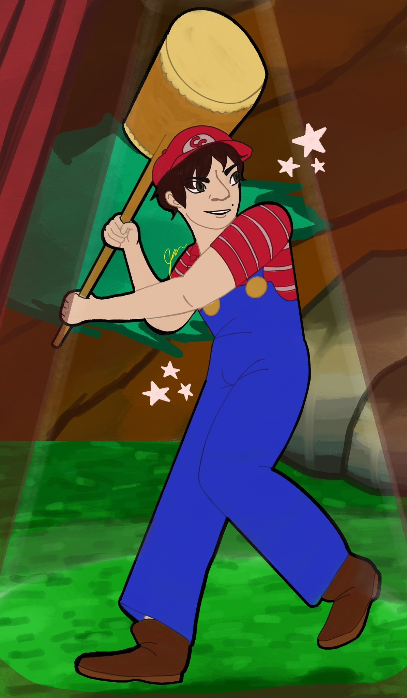
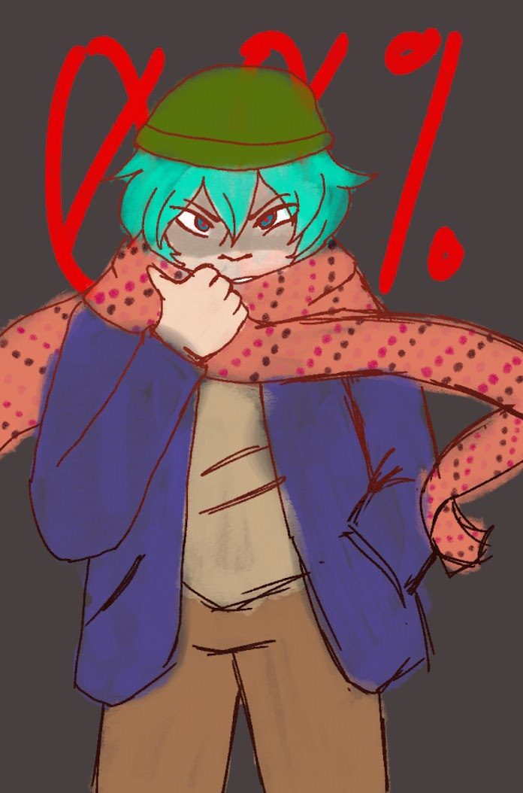
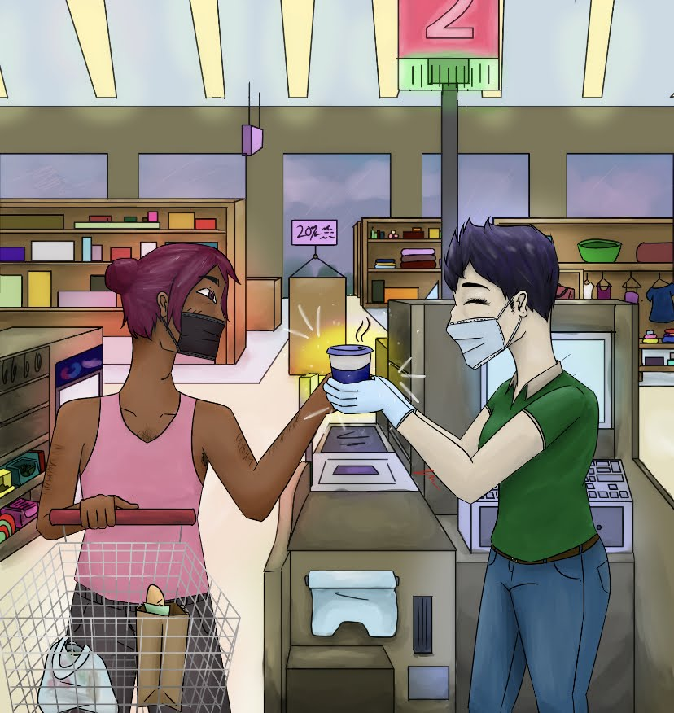
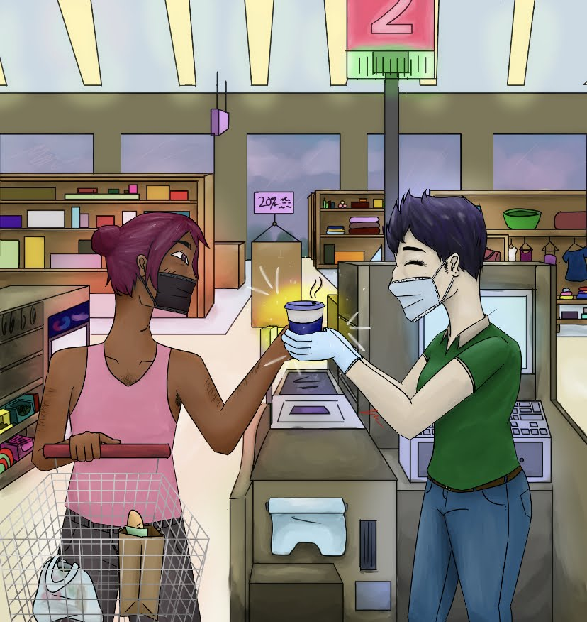

Jenna Liwag
Hello! I am a current student studying psychology at the University of California, Riverside. As a Filipino-American,
my background and family history is highly important to me and is integrated in all I do. In addition to community college and UCLA Extension,
I started my upper educational journey at University of California Merced before transferring to UCR for this school year. Merced was a lovely
place in which I have made lifelong connections and friendships, however it is a school very limited in terms of opportunity. UC Riverside is
much closer to home and more centralized to different networks and medical schools.
I want to be a friendly and familiar face to all seeking mental help, as I aim to attend medical school and go into psychiatry.
For now, I am simply a student with interests in gaming and art. Is this five hundred words yet? I'm not sure how seriously to take this
but I personally believe it's pretty epic. At UC Merced, I participated in the school's Dungeons and Dragons club and even became their
Vice President for a year. I put together social game nights bi-weekly and helped host a big event in which a bunch of different games
of Dungeons and Dragons were put on and food was provided. I helped sort out conflicts and inter-mingled with my peers in order to bring
a safe place to engage in.
God, she's not even close to five hundred words. Why do I need to write so much anyway? I mean I get why but like why why, you know.
There's only so much I can discuss about myself before the website reader is uninterested. As of writing this I am 21 years of age.
I identify as nonbinary and I broke my ankle in freshmen year. That hurt pretty bad. I literally have no other professional/career
experience other than my Subway job I had for four months. Speaking of which the Subway at school is very bad in terms of service.
They should hire me like actually. Do you know how much faster that line would go on a day to day basis? I also am such a big fan
of Nintendo and video games in general. I do not in fact have any other professional experience. I am just a gay little nerd. I am
aiming to find some medical work to either volunteer or intern for. Shadowing for a doctor is a top priority for me right now. Why
is medical school so dang hard to get in to like dang do we not need doctors right now? Like okay, fine we want a really grueling
process because we want good doctors but there are also people who got through all this and are the worst people in the world. Also,
cops should have to go through this process too then. I'm nearing on five hundred words. Jenna Liwag out.
Experience
Vice President for Dungeons and Dragons Club
• Assisted with interpersonal relations and conflicts
• Hosted social events bi-weekly
• Ran club meetings
Sandwich Artist
• Prepped ingredients and assembled sandwiches
• Provided exceptional customer service
Dungeons and Dragons Club
• Met with club members for weekly creativity and conflict resolution excercises
• Gained necessary experience that promoted character and skill growth
• Learned to quickly assess the proper tools to resolve situations
Education
UC Merced
University of California Riverside
Portfolio




